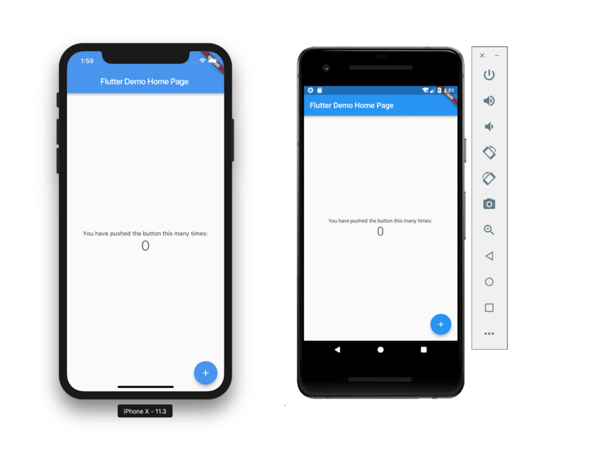
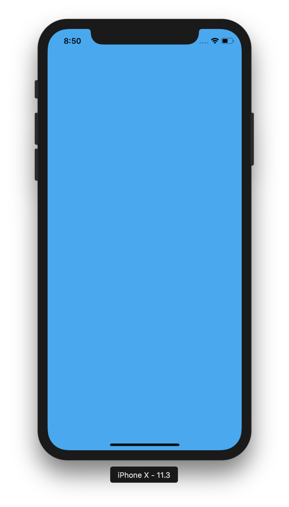

<!DOCTYPE html>
<html lang="en">
  <head>
    <meta charset="utf-8" />
    <meta name="viewport" content="width=device-width, initial-scale=1.0, maximum-scale=1.0, user-scalable=no" />

    <title>reveal-md</title>
    <link rel="stylesheet" href="./dist/reveal.css" />
    <link rel="stylesheet" href="_assets/../../theme/my-theme.css" id="theme" />
    <link rel="stylesheet" href="./css/highlight/zenburn.css" />

  </head>
  <body>
    <div class="reveal">
      <div class="slides"><section  data-markdown><script type="text/template"># Flutter framework


</script></section><section  data-markdown><script type="text/template">
## What is Flutter?

- Flutter is a free and open-source, cross-platform development framework created by Google. 
- It is used to develop high-performance, native mobile applications for iOS and Android from a single code base.
- Apart from mobile platforms, it can also be used to develop applications for Windows, Mac, Linux, Google Fuchsia OS and the web.
</script></section><section  data-markdown><script type="text/template">
## A brief history of mobile app development


</script></section><section  data-markdown><script type="text/template">
## WebViews


</script></section><section  data-markdown><script type="text/template">
## Reactive Views


</script></section><section  data-markdown><script type="text/template">
## Flutter Views


</script></section><section  data-markdown><script type="text/template">
## Flutter's history

- Started in 2014 as an experimental engine codenamed Sky used for developing Android applications.
- Transformed into a real project renamed Flutter and unveiled in 2015 at Dart developer summit.
- First stable release in 4 December 2018.
- Latest release (1.17) in 6 May 2020 which includes support for the Metal API, new Material widgets and higher performance for iOS apps.
</script></section><section  data-markdown><script type="text/template">
## Some interesting facts about Flutter (2019)

- There are 200 million+ users of Flutter made apps
- On Google’s Playstore, there exist 3000+ Flutter apps
- Flutter is 34th most popular software repo in GitHub 
- There are more than 300,000+ developers who use Flutter for app development
</script></section><section  data-markdown><script type="text/template">
## Why Flutter?
</script></section><section  data-markdown><script type="text/template">
## Faster code writing

- Faster & more dynamic mobile app development.
- Offers hot reloading which usually only takes (milli)seconds and helps teams add features, fix bugs and experiment faster
</script></section><section  data-markdown><script type="text/template">
## Portability

- Flutter doesn’t depend on the platform, because it renders its own widgets and designs.
- Initially targeted only mobile platforms, but since 2018 several embedders were created to allow users to run the Flutter applications on Windows, macOS, Linux.
- Flutter is now close to running on all possible channels, making one fast and modern framework run on virtually anything.
</script></section><section  data-markdown><script type="text/template">
## Excellent performance

- Uses Dart as primary language which compiles into native code
- Flutter has its own widgets, so there’s no need to access OEM ones, therefore there’s less communication between the app and the platform
- Ensure fast app startup times and fewer performance issues in general.
</script></section><section  data-markdown><script type="text/template">
## Other reasons

- Good documentation
- A growing community
- Supported by Android Studio and VS Code
</script></section><section  data-markdown><script type="text/template">
### Dart

- Flutter applications are written in Dart, a programming language developed by Google.
- Dart is an object-oriented language that supports both ahead-of-time and just-in-time compilation.
- The Dart language offers many of the features seen in other languages including garbage collection, async-await, strong typing, generics, as well as a rich standard library.
- Dart can compile to Javascript. Combined with Flutter, this allows code to be shared across web and mobile platforms.
</script></section><section  data-markdown><script type="text/template">
## Defining classes 

Dart
```dart							
class Bicycle {					
  int cadence;					
  int speed;					
  int gear;						
}			

void main(List&lt;String> args) {}
```

Java
```java
public class Bicycle {
	int cadence;
	int speed;
	int gear;

	public static void main(String[] args) {}
}
```
</script></section><section  data-markdown><script type="text/template">
## Defining constructors 

Dart

```dart	
Bicycle(this.cadence, this.speed, this.gear);
```

```dart	
Bicycle(int cadence, int speed, int gear) {
  this.cadence = cadence;
  this.speed = speed;
  this.gear = gear;
}
```

Java
```java
public Bicycle(int cadence, int speed, int gear) {
  this.cadence = cadence;
  this.speed = speed;
  this.gear = gear;
}
```
</script></section><section  data-markdown><script type="text/template">
### Declaring and instantiating variables

Dart
```dart
	var bike = Bicycle(2, 0, 1);
	print(bike);
```
Output: Instance of 'Bicycle'

Java
```java
	Bicycle bicycle = new Bicycle(2, 0, 1);
	System.out.println(bike);
```
Output: Bicycle@6d06d69c
</script></section><section  data-markdown><script type="text/template">
### Strings

Dart
```dart
	@override
	String toString() => 'Bicycle: $speed mph';
```
Output: Bicycle: 0 mph

Java
```java
	@Override
	public String toString() {
		return "Bicycle: " + this.speed + " mph";
	}
```
Output: Bicycle: 0 mph
</script></section><section  data-markdown><script type="text/template">
## Private members

Dart
```dart
class Bicycle {		
	int _speed = 0;
	int get speed => _speed;		
}	
```

Java
```java
public class Bicycle {		
	private int speed = 0;	
	public int getSpeed() { return this.speed;}		
}
```
</script></section><section  data-markdown><script type="text/template">
Dart
```dart
Rectangle({this.origin = const Point(0, 0), this.width = 0, this.height = 0});	
```

Java
```java
public class Rectangle {
    public int width = 0;
    public int height = 0;
    public Point origin;

    // four constructors
    public Rectangle() {
        origin = new Point(0, 0);
    }
	
    public Rectangle(Point p) {
        origin = p;
    }
	
    public Rectangle(int w, int h) {
        origin = new Point(0, 0);
        width = w;
        height = h;
    }
	
    public Rectangle(Point p, int w, int h) {
        origin = p;
        width = w;
        height = h;
    }
}
```
</script></section><section  data-markdown><script type="text/template">
## Using optional named parameters in Dart

```dart
main() {
  print(Rectangle(origin: const Point(10, 20), width: 100, height: 200));
  print(Rectangle(origin: const Point(10, 10)));
  print(Rectangle(width: 200));
  print(Rectangle());
}
```
</script></section><section  data-markdown><script type="text/template">
## Abstract classes in Dart

```dart
abstract class AbstractContainer {
  // Define constructors, fields, methods...
  void updateChildren(); // Abstract method.
}
```

```dart
class Container extends AbstractContainer {
  // eroare de compilare: Error: The non-abstract class 'Container' is missing implementations for these members:
  //- AbstractContainer.updateChildren
}
```

```dart
class Container extends AbstractContainer {
  void updateChildren() {}
}
```
</script></section><section  data-markdown><script type="text/template">
## Interfaces in Dart

```dart
class Person {
  String firstName;
  String lastName;

  Person(this.firstName, this.lastName);

  String greet(String who) => 'Hello, $who. I am $firstName + $lastName.';
}
```

```dart
class Impostor implements Person {
  String greet(String who) => 'Hi $who. Do you know who I am?';
}
```
</script></section><section  data-markdown><script type="text/template">
## Compile error

```log
Error compiling to JavaScript:
main.dart:47:7:
Error: The non-abstract class 'Impostor' is missing implementations for these members:
 - Person.firstName
 - Person.lastName
class Impostor implements Person {
      ^^^^^^^^
main.dart:39:10:
Info: 'Person.firstName' is defined here.
  String firstName;
         ^^^^^^^^^
main.dart:40:10:
Info: 'Person.lastName' is defined here.
  String lastName;
         ^^^^^^^^
Error: Compilation failed.
```
</script></section><section  data-markdown><script type="text/template">
### Correct implementation 

- Need to implement getter and setter for each instance variable

```dart
class Impostor implements Person {
  String firstName;
  String lastName;

  String greet(String who) => 'Hi $who. Do you know who I am?';
}
```
</script></section><section  data-markdown><script type="text/template">
## Components of Flutter

- Dart platform
- Flutter engine
- Foundation library
- Design-specific widgets
</script></section><section  data-markdown><script type="text/template">
### Everything is a widget

- Widgets are the basic building blocks of a Flutter app’s user interface.
- Each widget is an immutable declaration of part of the user interface.
- Unlike other frameworks that separate views, view controllers, layouts, and other properties, Flutter has a consistent, unified object model: the widget.
- By having everything be a widget, the entire application, which incidentally is also a widget, can be represented within the widget hierarchy.
</script></section><section  data-markdown><script type="text/template">
## Create a Flutter application

- From the command line: flutter create [app_name]
- From an IDE such as VS Code, Android Studio and IntelliJ
- The application brings in the flutter/material.dart package to offer some basic scaffolding for the app, such as a title bar, material icons and theming. It also sets up a stateful widget to demonstrate how to update the user interface when application state changes.
</script></section><section  data-markdown><script type="text/template">


</script></section><section  data-markdown><script type="text/template">### Simple UI Widget Example

```flutter
import 'package:flutter/material.dart';

void main() {
  runApp(
    Container(color: Colors.lightBlue)
  );
}
```
</script></section><section  data-markdown><script type="text/template">

</script></section><section  data-markdown><script type="text/template">
### Stateless vs. Stateful Widgets

- Stateless widgets don’t change their content after they are created and initialized.
- Stateful widgets maintain some state that can change while running the application, e.g. in response to user interaction.
</script></section><section  data-markdown><script type="text/template">
### Other types of widgets
- widgets that control the layout of the application.
- widgets that detect gestures using the GestureDetector class.
- widgets that control the painting
- widgets that control animation playback over time, using AnimationController class.
</script></section><section  data-markdown><script type="text/template">
## Testing in Flutter
- Flutter includes a WidgetTester utility to interact with widgets from a test.
</script></section><section  data-markdown><script type="text/template">
### Bibliography

- https://flutter.dev/docs/resources/technical-overview
- https://flutter.dev/docs/resources/faq#capabilities
- https://dart.dev/guides/language/language-tour
- https://www.smashingmagazine.com/2018/06/google-flutter-mobile-development/
- https://www.thedroidsonroids.com/blog/flutter-in-mobile-app-development-pros-and-cons-for-app-owners
</script></section><section  data-markdown><script type="text/template">- https://medium.com/@krossovochkin/dart-language-bad-design-choices-6e35987dc693
- https://medium.com/free-code-camp/learn-flutter-best-resources-18f88346ed0f
- https://medium.com/kinandcartacreated/flutter-the-skys-the-limit-84887c8f650d
- https://medium.com/@concisesoftware/what-is-flutter-here-is-everything-you-should-know-faed3836253f
- https://en.wikipedia.org/wiki/Flutter_(software)</script></section><section  data-markdown><script type="text/template">- https://hackernoon.com/whats-revolutionary-about-flutter-946915b09514
- https://www.toptal.com/dart/dartlang-guide-for-csharp-java-devs
- https://codelabs.developers.google.com/codelabs/from-java-to-dart/#1
- https://adtmag.com/blogs/dev-watch/2015/11/google-unveils-flutter.aspx
- https://www.tftus.com/blog/why-mostly-android-developer-consider-flutter-app-development/</script></section><section  data-markdown><script type="text/template">- https://www.cerebruminfotech.com/blog/google-flutter-vs-react-native-vs-xamarin/
- https://www.freecodecamp.org/news/what-is-flutter-and-why-you-should-learn-it-in-2020/ </script></section><section  data-markdown><script type="text/template">
# Thank you for your attention!</script></section></div>
    </div>

    <script src="./dist/reveal.js"></script>

    <script src="./plugin/markdown/markdown.js"></script>
    <script src="./plugin/highlight/highlight.js"></script>
    <script src="./plugin/zoom/zoom.js"></script>
    <script src="./plugin/notes/notes.js"></script>
    <script src="./plugin/math/math.js"></script>
    <script>
      function extend() {
        var target = {};
        for (var i = 0; i < arguments.length; i++) {
          var source = arguments[i];
          for (var key in source) {
            if (source.hasOwnProperty(key)) {
              target[key] = source[key];
            }
          }
        }
        return target;
      }

      // default options to init reveal.js
      var defaultOptions = {
        controls: true,
        progress: true,
        history: true,
        center: true,
        transition: 'default', // none/fade/slide/convex/concave/zoom
        plugins: [
          RevealMarkdown,
          RevealHighlight,
          RevealZoom,
          RevealNotes,
          RevealMath
        ]
      };

      // options from URL query string
      var queryOptions = Reveal().getQueryHash() || {};

      var options = extend(defaultOptions, {}, queryOptions);
    </script>


    <script>
      Reveal.initialize(options);
    </script>
  </body>
</html>
